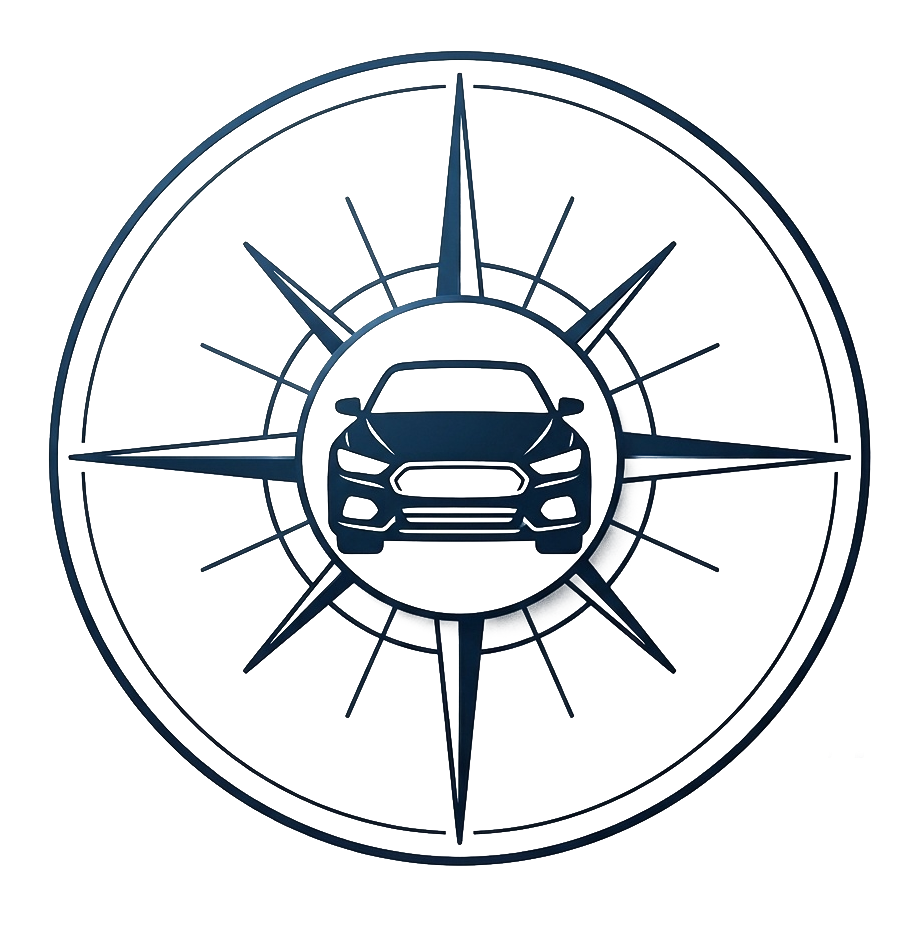
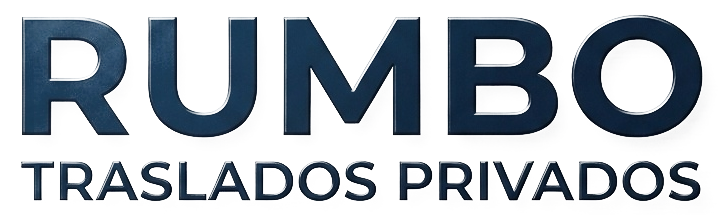

Rumbo
Para seguir usando Rumbo hace falta actualizar la app primero. Es rápido.


Panel del conductorEscribe tu usuario o tu correo. Si la cuenta existe, te mandamos un código.
Completa tus datos. Un administrador revisa y aprueba tu cuenta; cuando la apruebe podrás ingresar con tu correo y clave.
Tu vehículo
Android pedirá permitir "fuentes desconocidas" la primera vez.
Cuando aceptes un pedido, aparece aquí con el mapa y el chat del pasajero.
Cargando conductores...
Cargando pedidos...
Aprobar: puede ingresar y trabajar con su clientela. En la red: además recibe viajes que otros conductores no pudieron tomar.
Cargando...
| Fecha | Conductor | Monto | Estado de pago |
|---|
| Fecha | Pasajero / ruta | Conductor | Estado |
|---|
Con esto activado, además de tu clientela, puedes recibir viajes que otros conductores de la red no pudieron tomar.
Actívalo cuando salgas a un viaje confirmado.
Al tocar "Iniciar viaje" se abre sola, con la ruta hacia el destino ya cargada.
La plata de cada viaje entra directo a tu cuenta de Mercado Pago. El pasajero puede pagar con débito, crédito o en cuotas (el interés de las cuotas lo paga él).
Revisando...
Importante: en tu cuenta de Mercado Pago no actives "cuotas sin interés"; si lo activás, ese costo lo pagás vos en cada viaje.
Al terminar el viaje, el pasajero puede elegir pagarte por transferencia. Ve estos datos con botón de copiar, para pegarlos en su banco sin errores. Si dejas todo vacío, no se ofrece transferencia.
Quien escanee este QR o abra tu link queda registrado como tu cliente.
Días con tarifa punta todo el día. Los feriados se detectan solos.
En los días marcados arriba, todo el día es punta salvo esta franja:
El resto de los días solo son punta en estas dos franjas:
El pasajero ve esto al pedir el viaje, para reconocer tu auto al llegar.
Si olvidas tu clave, el código para recuperarla llega a este correo.
Los pedidos agendados para estos días/horarios pasan directo al siguiente conductor de tu red — no te van a llegar ofertas en ese rango.
Tu calificación queda registrada en el viaje.
O elige tú cómo te paga:
Los precios de los combustibles cambian los jueves. Revisa el valor por litro para que las cotizaciones queden al día.